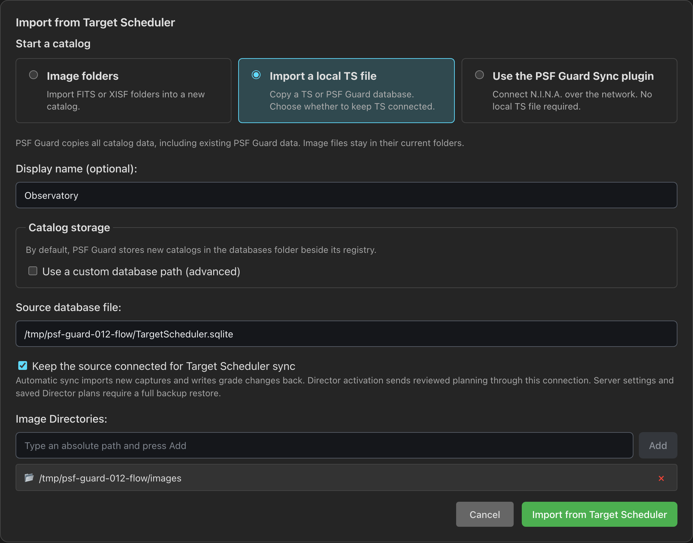
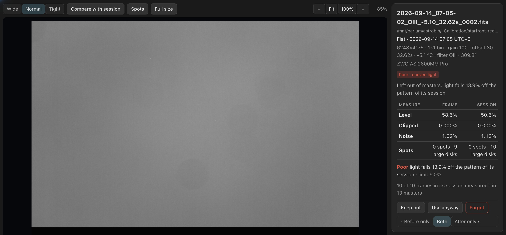
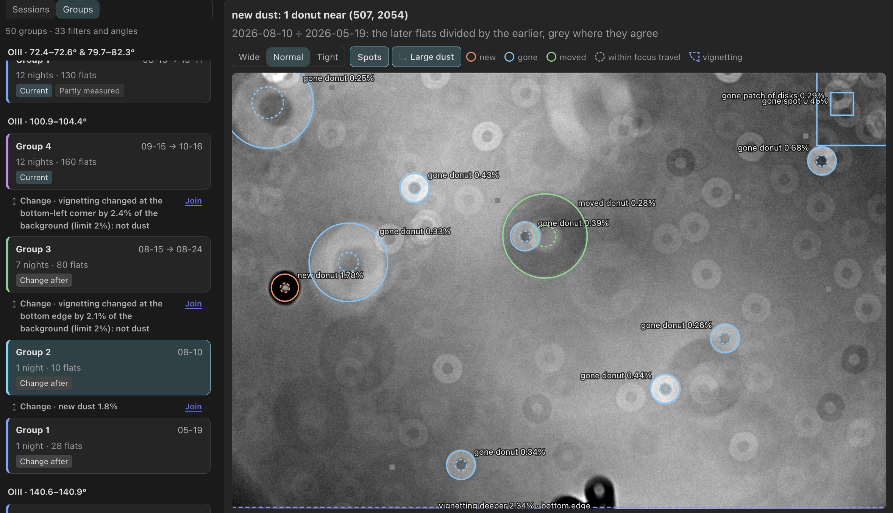
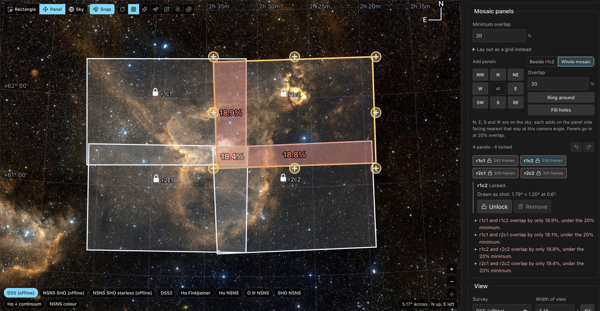

New in 0.12
Owned catalogs with Target Scheduler sync, better calibration decisions, flexible mosaics, new stretch modes, Gaia color calibration and scheduled backups. Direct TS access is deprecated in this release.
Before upgrading from 0.11 ↓ · All changes in 0.12 →
For new Target Scheduler databases, choose Settings → Databases → Import from Target Scheduler to import the database and set up sync.
Your current Target Scheduler setup will keep working in 0.12. A later update will create a PSF Guard catalog for you and keep captures, plans and grades in sync with Target Scheduler.
Separate catalogs let us add features to PSF Guard and support new Target Scheduler versions. We plan to remove direct database access in 0.13 or later.
Keep your catalog separate from Target Scheduler
Import a local TS database into a PSF Guard-owned catalog, or create a catalog and pair the PSF Guard Sync plugin without a local TS file. Choose automatic capture sync on startup, when images or grades change, or on a schedule. Grade writeback has its own switch and reports conflicts instead of overwriting TS edits.
You can also import a standalone catalog copy or choose a custom storage path. Director activation sends approved planning through the saved TS connection and retries failed deliveries. Manual transfers still use Preview and Apply.

Import Target Scheduler and set sync →
Review calibration as closely as your lights
The new Calibration page grades bias, dark, dark-flat and flat frames, keeps poor frames out of masters, and shows which lights are affected. Inspect the evidence, override a grade, and set checks for each rig.

Browse calibration frames → · Grades and coverage →
Match flats across nights and dust changes
PSF Guard measures how flats change, groups nights that match, and chooses flats from the right side of a dust or illumination change. Inspect dust shadows, compare groups, and split, join or override a group when needed. Matching also checks whether flats at different rotator angles can serve the same lights.

Flat matching and dust changes →
Build mosaics one panel at a time
Add, move and rotate individual panels while checking overlap across rigs. Captured panels stay locked to their actual fields until you unlock them. Activation previews show what Target Scheduler will run, turn off or restore.
The Planning button also opens plans from image-folder imports. If a catalog cannot be planned, it shows the catalog warnings and Retry planning.

Edit mosaic panels → · Activate plans →
Stretch faint detail and calibrate star colors
Choose Median anchor to set the background brightness and control bright highlights, or Layered to retain local contrast in bright structure, compress star cores and adjust saturation. Auto MTF remains the default.
Gaia color calibration balances RGB, LRGB and one-shot-color stacks against measured star colors, with a Sun-colored star as white and a neutral sky background. Install Gaia colors in Settings and plate solve the reference frame. The card shows the calibration result or explains why it could not run. Narrowband palettes keep their chosen colors.
Choose a stretch → · Set up color calibration →
Back up catalogs and settings together
Create one archive of your settings and catalogs, even while N.I.N.A. writes to them. Schedule daily or weekly backups and choose how long to keep them. Manual desktop backups and new desktop schedules include secrets by default; browser backups leave them out by default. Check the choice before backing up. Restoration remains manual.
Review by observing night, with better scoring controls
Browse nights on each rig's local clock, show the newest frames first, and select by score, star count or HFR. Save scoring defaults and tune the new HFR rise and Star loss penalties. Compact layouts use more of the screen, and signed-in users keep their view choices across browsers.
The Sequence summary and score chart stay below the toolbar as you scroll. Click a Solved pointing point to move to its frame, or collapse the chart from its heading. PSF Guard remembers the collapsed state in this browser. On short windows, the charts scroll with the page to leave room for frames.
Review images → · Score and select frames →
Resize the desktop UI
Choose Zoom in, Zoom out or Reset to 100% from the hamburger menu. Cmd/Ctrl with +, − or 0 changes the whole UI from 50% to 200%, including Settings. The app remembers the scale on this device. Image zoom stays separate.
Control queued work
The header now shows progress for previews, imports, exports, calibration checks and catalog upkeep. Stop an import to roll it back, or stop an export and keep completed files. Quality scans you start queue behind the current scan and run before database-wide analysis.
Pause automatic quality analysis, preview pre-generation, flat measuring or frame-site reading for a database. Completed work is kept, and the row stays paused until you choose Resume or restart the server. Quality scans you start and previews you open still run. Settings and Calibration also offer Resume for their paused jobs.
Builds you start pause automatic builds, which resume from their checkpoints. Build requests survive a restart even during preparation. Queued builds use the latest frames, grades and calibration when they start. Start a color preview before its channels finish; it waits and uses their new stacks.
In Data Transfer and Remote PSF Guard, change options while a preview runs, then preview the new choices. PSF Guard stops the old preview. Read Background jobs.
Keep stacks through updates and restarts
Chosen by Seiza now selects a reference from the largest orientation group when frames have different rotator angles. Adjust Orientation group margin in Settings → Stacking if frames near the rotation limit are still rejected. When grading leaves fewer than two usable frames, the channel’s old stack disappears from its card and from color source choices.
Processing runs show their queue position and progress, survive restarts, and reapply your choices after a stack refreshes. Color processing reports each channel and tool, supports Stop, and reuses unchanged channel results. Improved resampling removes cross-hatched bands from slightly rotated frames. Stacks, WBPP and exports use the same calibration settings and flat groups.
Build requests appear immediately as Preparing stack build while PSF Guard prepares the frames in the background. Calibration checks and exports reuse one library read per request. With automatic reprocessing enabled, each channel's saved processing runs after a build you start, ahead of your other queued builds.
From 0.12 onward, engine updates reuse completed stacks and masters when their output is unchanged. If only the display stretch or an OSC stack's color calibration needs an update, Build current set refreshes the card preview from the saved FITS. The stack and its processing stay available.
Adjust color while stacks build
Short color compositions you start can run alongside stack builds when they reuse prepared channels, or need no deconvolution or RC-Astro and no other composition is preparing the same inputs. After a build you start, each target's color can compose once its own channels finish. Other color work stays in the build queue.
Compose color while stacks build →
Combine WBPP masters in color
Combine channel stacks gives WBPP masters their own WBPP card, including projects split by exposure. Source labels show the sub-exposure, such as R (WBPP, 300 s). Use Custom combination when a filter has several masters or you want to mix WBPP and PSF Guard sources.
Reuse stacks after updates → · Compose WBPP masters →
Build and process stacks → · Run WBPP →
More in this release
- Import rules and review protect existing capture plans and keep unwanted files out.
- Background jobs show queued and waiting work. Move to top makes a queued stack, processing or WBPP task run next after the current task finishes; settings protect unsaved edits.
- MCP tools add flat-group and backup actions. The collaboration beta adds file delivery with transfer controls and receipts.
Read the full 0.12 release notes for all changes, fixes and links to the detailed guides.
Before upgrading from 0.11
- Review new TS connections. Local-file imports enable automatic capture sync and grade writeback. Review the settings after importing. Your current Target Scheduler setup will keep working in 0.12. A later update will create a PSF Guard catalog for you and set up sync.
- Back up first. Keep a copy of catalogs and settings before the upgrade. See Backups for available methods.
- Allow time for background checks. The first calibration health pass reads every light's header. Frame-site discovery, calibration grading and flat measurements can add work, especially on a NAS. Jobs report progress and yield to work you start.
- Allow results to rebuild after upgrading from 0.11. Stacks and masters rebuild once when you next use them. PSF Guard also recalculates plate solves and satellite predictions from 0.11. Later engine updates reuse results when their output is unchanged. A display-only update refreshes card previews from the saved FITS. Updated noise measurement can lower reported SNR without a loss of signal.
- Check saved calibration links. Session identifiers change once in this version. An old session link opens the first session instead. New identifiers stay stable when warmer or colder frames join a session.
- Check activation previews. Activation now disables exposure plans outside the plan's objectives. Use Take Target Scheduler's values first if you want to retain extra exposure lengths made in N.I.N.A.
- Understand downgrade limits. Version 0.11 can still open a graded catalog, but ignores the new calibration grades and overrides except its existing stray-light exclusion. An older version that saves settings drops the new calibration settings and rig overrides; restore them after returning to 0.12.